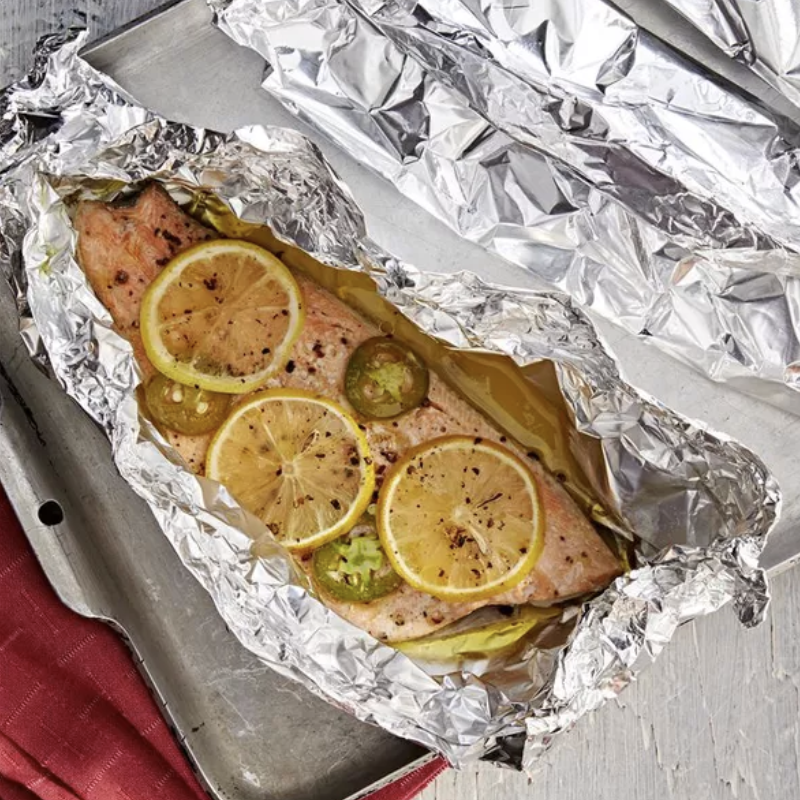

Odin Recipes
Fish in Foil

Description
Baked fish in foil is a "no-smell" fish recipe,
and the only one I make for my family (I hate
fish, they love it!). Take foil packets to the
table for service, and keep the packets around
for wrapping and discarding bones and skin. Then
when dinner's done, haul those babies to the
outside trash.
This dish is packed with veggies, beef, and saucy
flavors for a weeknight dinner warrior that checks
all the boxes. Served with rice or lo mein noodles,
this will be the best beef stir-fry you've ever made.
Ingredients
- 2 rainbow trout fillets
- 1 tablespoon olive oil
- 2 tablespoons garlic salt
- 1 teaspoon ground black pepper
- 2 sheets heavy-duty aluminum foil
- 1 fresh jalapeno pepper, sliced
- 1 lemon, sliced
Steps
- Preheat the oven to 400 degrees F (200 degrees C).
-
Rinse and pat fillets dry. Rub fillets with
olive oil, and season with garlic salt and
black pepper. Place each fillet on a large
sheet of aluminum foil. Top with jalapeno
slices, and squeeze the juice from the ends
of the lemon over fillets. Arrange remaining
lemon slices on top of fillets.
-
Carefully seal all edges of the foil to form
enclosed packets. Place packets on a baking
sheet.
-
Bake in the preheated oven until fish flakes
easily with a fork, 15 to 20 minutes depending
on size of fillets.